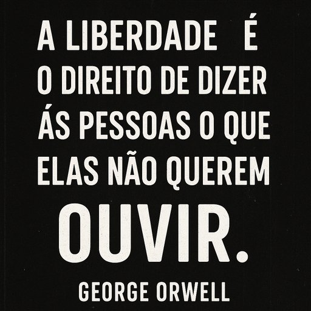

Publicado em 2025-06-23 16:19:00
Chamam-lhe fact-checking. É censura.
Disfarçada de neutralidade, disfarçada de ciência, disfarçada de proteção.
Mas na verdade, é apenas o medo da dissidência.
É o novo índice.
É a Inquisição com cabo de rede.
Vivemos numa época onde pensar fora da caixa é perigoso.
Onde citar Orwell é suspeito.
Onde questionar o poder é rotulado como “desinformação”.
E os que ousam levantar a voz são silenciados pelo clique de um rótulo: "Inverídico", "Duvidoso", "Nocivo".
Mas não nos calaremos.
Não aceitaremos que a Liberdade se curve perante a correção compulsiva.
Não aceitaremos que a Verdade seja um monopólio dos dominadores.
Não aceitaremos que a História seja escrita apenas por vencedores com verificador.
dos que escreveram contra o vento,
dos que disseram não quando o mundo inteiro dizia sim senhor.
E assim continuaremos:
Livres. Pensantes. Rebeldes. Humanos.
Artigo da autoria de Francisco Gonçalves